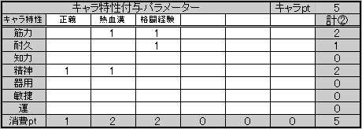

|
あなたには５pのキャラポイントが与えられます。 （能力タイプでノーマルを選んだ場合はさらに＋１p）。 このキャラ特性で５p分のパラメーター補正を行う事ができます。 ポイントを使ってキャラクター独特の特技だったり、特筆する性格などを決めてキャラクター造形を深めましょう。 このキャラ特性で５p分のパラメーター補正を行う事ができます。 キャラ特性によっては イベントなどの判定でＧＭの判断に応じて判定ボーナスをもらえる場合がありますので、 色々面白いキャラ特性を自由に考えてみてください。 ▼キャラ特性の作成 キャラ特性の名前は自由に決めて結構です。 以下の作成パターンを参考にキャラポイントを使ってキャラ特性を作成しましょう。 例えば【怪力】というキャラ特性を作り、効果が筋力＋１される ――といった様にあなたのキャラクターをカスタマイズしていきましょう。 あなたがプレイするシナリオによってはＧＭ（ゲームマスター）が判定に補正をかける場合もあるかもしれません。 作成パターンは以下の通りとなります。
↓エクセルシートでは以下の様になります。補正を入力する事でパラメーター欄には自働反映されます。  なお補正をかける事ができるのは筋力等のパラメーターのみで、ＨＰや命中などのステータスには補正をかける事はできません。 | ||||||